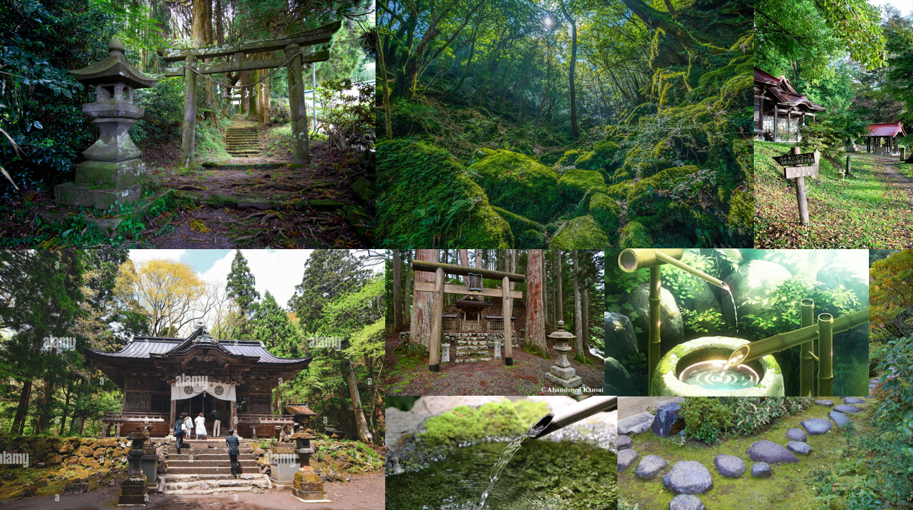

NeoN Unreal
NeoNUnreal is a project which me and my team kickstarted in 2025, aiming to create a game in Unreal Engine. The game takes place in a traditional Japanese setting and features a boss fight against the stone guardian of a shrine.
In this project, I focused on learning Unreal Engine as a whole and found myself working on a lot of visual elements, such as the landscape and foliage tools. The map that you see in the image was fully created by me, showcasing my environmental design skills and attention to atmospheric detail.
One of my proudest achievements for this project was creating the boss spawn sequence. Players must light the lamps around the arena, which triggers an impressive summoning sequence featuring custom particle effects that I created. During this moment, surrounding rocks are pulled inwards to the center of a sudden storm, culminating in the boss's appearance as the storm dissipates.
The game is still in active development and will continue to be updated with more features and content by future classes at Media College, ensuring its improvement over time.
Development Highlights
Technical Game Art & Environment Design
Working as part of a collaborative team, this project served as an intensive introduction to Unreal Engine development. My primary focus was on visual design and environmental storytelling, which led me to take ownership of the complete map creation process.
For the map, I drew inspiration from traditional Japanese architecture and landscapes, creating a moodboard to guide the visual direction and give the team an idea for what I was going to create.
The boss summoning sequence became a mix of technical and artistic skills, combining blueprint scripting with custom particle systems. This came due to me learning how to make particle effects. The rock-pulling effect and storm dissipation created a nice gameplay moment that enhanced the overall player experience.

Storm Effects

Fire Particles

Visual Direction
Feature demonstration
here you can see the boss summoning sequence in action:
Project Information
Engine:
Unreal Engine 5
Language:
Blueprint Visual Scripting
Development Time:
6 months
Team Size:
Team Project
Platform:
PC
Focus:
Technical Game Art
Status:
In Development